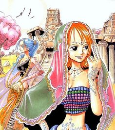

In der Welt von One Piece gibt es viele verrückte und mysteriöse Sachen. Doch es ist wohl nichts so geheimnisvoll wie die berüchtigten Teufelsfrüchte. Eine von ihnen ist mehr als 10 Millionen Berry wert. Seefahrer riskieren ihr Leben auf der Suche nach ihnen und sie verändern das Lebendesjenigen der sie gegessen hat für immer. Denn sie verleihen ihm übermenschliche Kräfte. Man unterscheidet die Teufelsfrüchte in drei Hauptkategorien:
Teufelsfrüchte
Logia-Früchte - die elementaren Teufelskräfte
Die Logiafrüchte sind neben den mythischen Zoanfrüchten am seltensten und verwandeln ihre Nutzer quasi in Götter. Wer eine Logia isst, ist in der Lage einer der Naturgewalten wie z.B. Eis oder Feuer zu beherrschen. So kann man sich als Nutzer sogar ganz in sein Element verwandeln und unendlich viel davon mit seinem Körper neu produzieren.

Teufelsfrüchte
- Candy-Frucht
- Donner-Frucht
- Feuer-Frucht
- Finsternis-Frucht
- Flüssigkeits-Frucht
- Funkel-Frucht
- Gefrier-Frucht
- Magma-Frucht
- Papier-Frucht
- Sand-Frucht
- Smoke-Frucht
- Sturm-Frucht
- Teig-Frucht
Teufelskrafnutzer
- Gasbade
- Enel
- Puma D. Ace
- Marshall D. Teach (Blackbeard)
- Honey Queen
- Kizaru (Gelber Affe / Borsalino)
- Aokiji (Blauer Fasan / Kuzan)
- Akainu (Roter Hund / Sakazuki)
- Simon
- Crocodile (Mr. 0)
- Smoker
- Monkey D. Dragon
- Caribou
Zoan-Früchte - die animalischen Teufelskräfte
Wer eine Zoan-Teufelsfrucht gegessen hat kann sich seitdem in ein Tier verwandeln. Daraus ergeben sich die drei verschiedenen Formen:
- Normale Form:
- In dieser Form ändert sich der Ursprungskörper rein äußerlich nicht, doch die natürlichen Körperfunktionen haben zugelegt.
- Halbanimalische Form
- Bei der Verwandlung in diese Form, „vermischen“ sich die Körper der neuen und der ursprünglichen Spezies miteinander. Das Ergebnis davon ist eine riesige, abstrakt wirkende Kreatur, die die Stärke, Geschwindigkeit und körperlichen Vorteile beider Spezies in sich vereint.
- Animalische Form:
- Befindet man sich in der animalischen Form, ist der Körper von der neuen teufelsfruchtspezifischen Spezies nicht mehr zu unterscheiden, lediglich in seltenen Fällen sind noch Merkmale der Ursprungsspezies zu erkennen.
Teufelsfrüchte
- Bull-Bull-Frucht
- Modell:Bison
- Modell:Giraffe
- Midell:Rhinoreros
- Modell:Stier
- Elefanten-Frucht
- Hund-Hund-Frucht
- Modell:Dachshund
- Modell:Dalmatiner
- Modell:Jackal
- Modell:Wolf
- Katzen-Frucht
- Modell:Leopard
- Koala-Frucht
- Kranken-Frucht
- Maulwurf-Frucht
- Mensch-Mensch-Frucht
- Modell:Buddah
- Pferd-Frucht
- Modell:Zebra
- Phönix-Frucht
- Raupen-Frucht
- Schlangen-Schlangen-Frucht
- Modell:Anaconda
- Königskobra
- Spinnen-Frucht
- Urzeit-Urzeit-Frucht
- Modell:Tyrannosaurus Rex
- Vogel-Vogel-Frucht
- Modell:Falke
- Modell:???
- Walros-Frucht
Teufelskrafnutzer
- Dalton
- Ecki Zugluft
- Minorhinoceros
- Minotauros
- Funkfried
- Fiffie
- unbekannter Marineoffizier
- Chaka
- Jabura
- Rob Lucci
- Minokoala
- Karma
- Miss Merry Christmas
- Tony Tony Chopper
- Senghok
- Pierre
- Minozebra
- Marco
- Epoida
- Boa Sandersonia
- Boa Marigold
- Onigumo
- X Drake
- Peruh
- Raffit
- Aylwan
Paramecia-Früchte - die übermenschlichen Teufelskräfte
Parameciafrüchte verleihen ihren Nutzern wahrhaft „übermenschliche Kräfte“. Bei keiner anderen Art von Teufelsfrüchten unterscheiden sich die einzelnen Fähigkeiten und Eigenschaften so stark wie bei dieser. Doch um den großen Bereich der möglichen Kräfte zu verdeutlichen: alle NICHT elementaren oder animalischen Teufelskräfte sind vom Typ Paramecia.
Teufelsfrüchte
- Alabaster-Frucht
- Alter-Frucht
- Beeren-Frucht
- Bomb-Frucht
- Diamant-Frucht
- Erdbeben-Frucht
- Fäden-Frucht
- Fessel-Frucht
- Festungs-Frucht
- Flora-Flora-Frucht
- Flüster-Frucht
- Geister-Frucht
- Gift-Frucht
- Gum-Gum-Frucht
- Hormon-Frucht
- Instrument-Frucht
- Iron-Blade-Frucht
- Klapp-Tür-Frucht
- Lahm-Frucht
- Liebes-Frucht
- Magnet-Frucht
- Mini-Frucht
- Munch-Munch-Frucht
- Muskel-Frucht
- Nadel-Frucht
- Netz-Frucht
- Pilz-Frucht
- Rad-Frucht
- Raum-Frucht
- Roboter-Frucht
- Rost-Frucht
- Schatten-Frucht
- Schaum-Frucht
- Scheren-Frucht
- Schlaf-Frucht
- Schmelz-Frucht
- Schwebe-Frucht
- Schwuppdich-Frucht
- Spiral-Frucht
- Stachel-Frucht
- Steinschlag-Frucht
- Stimmen-Frucht
- Taschen-Frucht
- Tatzen-Frucht
- Totenreich-Frucht
- Transen-Frucht
- Trenn-Trenn-Frucht
- Tunnel-Frucht
- Unsichbarkeits-Frucht
- Voodoo-Frucht
- Wachs-Frucht
- Wasch-Frucht
- Wirbelsturm-Frucht
Teufelskrafnutzer
- Alvida
- Jewelry Bonney
- Berry Good
- Mr. 5
- Jôzu
- Edward Newgate / Marshall D. Teach
- Don Quichotte de Flamingo
- Hina
- Capone Bege
- Nico Robin
- Abiz
- Perona
- Magellan
- Monkey D. Ruffy
- Emporio Ivankov
- Scratchman Apoo
- Jazz Boner (Mr. 1)
- Bruno
- Foxy, der Silberfuchs
- Boa Hancock
- Eustass Kid
- Bruce
- Wapol
- Urouge
- Pin Joker
- Largo
- Musshul
- Kreiselrad
- Trafalgar Law
- Vitan
- Shuu
- Gecko Moria
- Kalifa
- Inazuma
- Noko
- Don Acchiino
- Shiki
- Miss Valentine
- Bellamy
- Miss Doublefinger
- Bear King
- El Drago
- Blamenco
- Bartholom�us B�r
- Brook
- Bentham (Bon Curry / Mr. 2)
- Buggy, der Clown
- Sträfling des Impel Downs
- Absalom
- Basil Hawkins
- Gal Dino (Mr. 3)
- Kranich
- Erik Wirbelwind